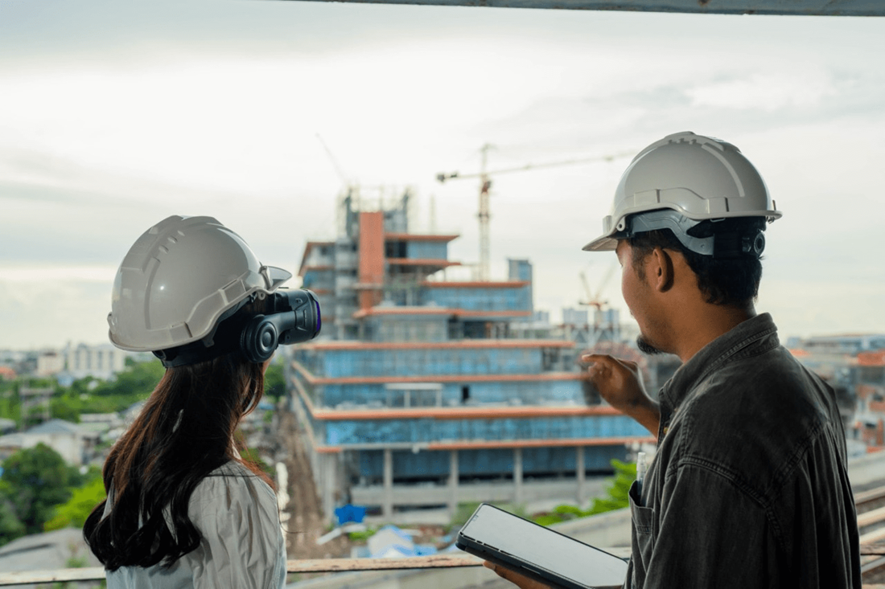

Virtual reality technology has the potential to revolutionize engineering education by providing a more immersive and realistic learning experience.
With a simulation-based learning experience, VR in engineering education can focus more on developing practice-based knowledge for engineering studies.
In this blog, you will read about virtual reality in civil engineering education. We will highlight how some universities use VR in civil engineering.
Virtual Reality in Civil Engineering
Virtual
labs for students allow them to explore various civil engineering disciplines, such as structural,
environmental, or transportation engineering.
Not only does it allow them to see 3D models of the building, but it also allows them to see various components that are generally hidden or inaccessible.
Here are some other reasons why VR is essential in civil engineering
-
While visiting the construction site during the industrial visit to understand different processes and stages, the risk of injury due to the failures of the structure is certainly a challenge. VR eliminates that fear and allows students to safely explore the industrial setups from the premises of the universities.
-
Virtual reality gives the leverage of uncovering the outer layer of components, making it easy for the students to see the internal components like reinforcement provided in the columns, beams, slabs, etc.
-
The underground structures, like different foundations, etc., and the underwater construction processes that are not visible in real-time to the students can be shown with ease in virtual reality.
-
Apart from superstructures that are visible in a real-time environment, the various components of substructures can be shown through transparent views.
-
It can also be used to train students in the use of various civil engineering tools, such as computer-aided drafting and designing programs, structural analysis software, etc., by creating a virtual environment where the 3D models can be projected on different planes, showing their different views.
Benefits of Using Virtual Reality in Civil Engineering Education

Virtual reality in civil engineering education enhances students' ability to visualize and interact with 3D models of structures, offering a more immersive learning experience than traditional methods.
This helps students grasp complex engineering concepts, improve spatial awareness, and better understand real-world applications.
✔️Enhanced visualization and understanding
VR
allows students to interact with and experience 3D models of structures and environments in a way that may not
be possible with traditional 2D modeling methods.
This can help students better understand complex
concepts and visualize the design and behavior of structures.
✔️Improved problem-solving skills
Virtual
reality simulations can create realistic, interactive scenarios that allow students to apply their knowledge to
solve real-world problems.
This can help students develop critical thinking and problem-solving
skills.
✔️Increased engagement and motivation
VR
can bring a responsive and immersive learning experience. It can help increase student motivation and retention
of topics.

✔️Enhanced collaboration
VR can be used to create shared virtual environments where students can work together and collaborate on projects and assignments.
✔️Increased accessibility
VR
can be used to provide students with unique and robust technology access to resources and experiences. It
includes visiting a construction site or using specific software and equipment.
✔️A safe and controlled learning environment
VR
simulations can provide students with the opportunity to experience real-world construction projects. Moreover,
it can happen in a risk-free and controlled environment. It is extremely helpful for training purposes.
Now, let us understand how universities across the globe are using virtual reality in civil engineering education.
Use cases of virtual reality in civil engineering education
Various universities/colleges have
experienced the potential of VR. In addition, some universities are exploring it in the civil engineering area. The
following are some examples of universities using virtual reality in civil engineering education.
✔️Stanford University
The
school of engineering at Stanford University has designed a virtual design and construction program. It trains
both graduate students and working professionals.
This step of incorporating virtual reality was notable
when they made a significant shift in transferring education online. This VR-based program helps deliver outputs
efficiently, avoiding common pitfalls in design and construction.
Curious about the real-world impact of VR in civil engineering education? Get our exclusive case study to uncover insights and success stories! Download now.
✔️University of California, Berkeley
The
Department of Civil and Environmental Engineering at UC Berkeley has a VR lab that is used to teach students
about construction management and design. Students can use VR to experience and analyze construction projects in
a virtual environment.
✔️Technical
University of Lisbon
The
Technical University of Lisbon developed a realistic and comprehensive VR solution for civil engineering
courses. This VR application has cavity walls and the other for bridge construction processes using the
cantilever method.
It
helps in enhancing the understanding and clarity of first-degree civil engineering students.
 Get the App from Meta Store: Download Now
Get the App from Meta Store: Download Now
How is iXRLabs facilitating civil engineering education?
A
pioneer solution provider for higher education, iXRLabs, offers unique and comprehensive virtual reality-based
solutions for engineering, medical science, and science education. The offering of iXRLabs for civil engineering
is as follows:

Comprehensive knowledge of machinery used in various processes
iXRLabs has
various civil engineering machine modules that cover machines like chain trenchers, crawl excavators, tunnel
boring machines, and many
more.
These VR-based modules allow students to get an exact idea of the machine, which may not be
possible otherwise.
For example, while exploring the rotary drilling machine in VR, students can
visualize how rotary
technology uses a sharp, rotating drill bit and downward pressure to cut, or crush, through the
subsurface.
Innovative virtual field trips
The
engineering study is based on practical knowledge. That means if students want to learn about bridge
construction,
they need to understand the practical concerns of the process.
iXRLabs brings students some innovative
field trips. On such trips, students can go and visit construction sites and other fields while not actually
being present over there. It boosts students’ knowledge about a particular area.
Enhanced knowledge, understanding, and clarity of subjects in a safe environment
iXRLabs’
offering in civil engineering can enhance students’ knowledge with various academic content and features
provided. For example, every field trip can witness the field with a bird’s-eye view. It gives students an
opportunity to watch the process from above the field.
Moreover,
all these virtual field trips and machines can be learned in a controlled environment. Therefore, taking such a
tour or performing experiments with machines for civil engineering in a virtual environment is risk-free.
Overall, iXRLabs ensures students get absolute knowledge, a clear understanding, and a safe environment
while learning and practicing with VR
in civil engineering.
Conclusion
Civil
engineering is one of the oldest branches of engineering. It has experienced significant advancement over the
years. It is one of the top-rated technologies that has proven pedagogical benefits.
It can offer a better conceptual understanding
of civil engineering education.
VR is a potent educational technology that has the potential to greatly enhance engineering education by providing an interactive and immersive learning experience that is more efficient and cost-effective.